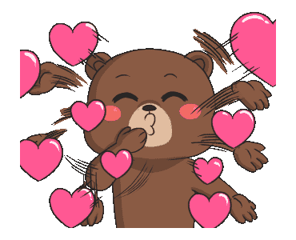
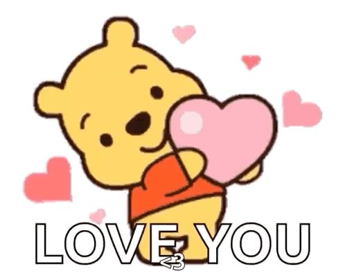
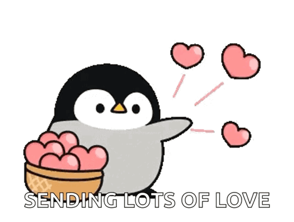
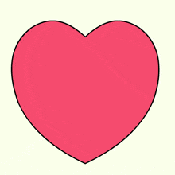
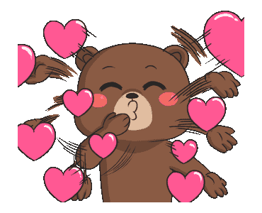
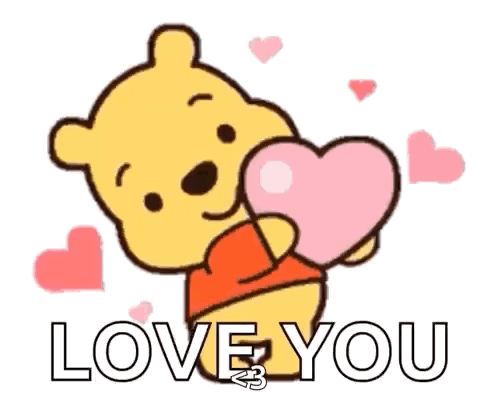
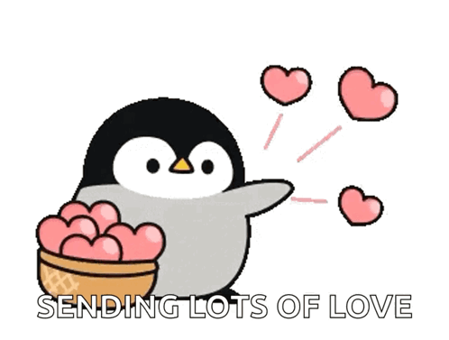
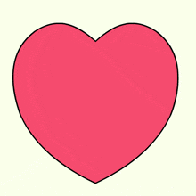

.gif)


 








Me diga com todas as palavras... -- >


Larissa...

Escrevo esta carta não para falar de despedidas, mas para falar de recomeços e, principalmente, de felicidade. A felicidade que eu só encontro ao seu lado e que eu quero construir, dia após dia, com você.
Eu olho para você e vejo tudo o que eu amo. Amo seu cabelo lindo, amo a forma como você implica comigo (e, no fundo, eu adoro essa nossa dinâmica). Amo aquela sua rotina de chegar da academia e perguntar se a bunda cresceu, esperando meu elogio — que sempre será sincero, porque você é perfeita para mim.
Amo seu jeito carinhoso, a forma como você me acolhe e cuida de mim quando estou mal; você é meu porto seguro.
Amo a vida que construímos. O tempo que passamos com o nosso filho, vendo ele crescer. Amo nossos lanches — que são frequentes, eu sei, mas são a melhor parte do dia —, amo a comidinha que você faz e até as suas "porquices", que só mostram a intimidade que temos.
Amo nossos banhos juntos sem segundas intenções, onde ficamos jogando conversa fora, eu esfrego suas costas e espremo suas espinhas. Amo te fazer cosquinhas, mesmo sabendo que você odeia, só para te ouvir rir. Amo ficar deitado vendo séries e filmes com você, mesmo aqueles péssimos, porque qualquer coisa ao seu lado fica boa.
Eu amo cada detalhe em você. Seus olhos, sua boca, a nossa conexão incrível no sexo e o quanto eu te amo, mais do que a mim mesmo.
Reconheço que tenho falhas. Me sinto mal por esquecer as coisas que você me pede com tanta facilidade, e sei que preciso melhorar. Quero te pedir perdão por tudo o que aconteceu antes e, principalmente, por ter me tornado, em alguns momentos, um cara que você não tem admirado. Mas eu estou aqui para dizer que isso vai mudar.
Estou disposto a fazer de você a mulher mais feliz do mundo. Sei que todo relacionamento tem problemas, mas estou pronto para encarar cada um deles e te defender de cada insegurança que surgir. Minha meta não é só a sua felicidade, mas a do Breno e a do nosso relacionamento.
Estou disposto a tudo: a fazer terapia de casal, a conhecer lugares diferentes, a fazer planos novos, a ter "dates" ruins e magníficos, desde que seja com você. Quero que você sinta, em cada atitude minha, que sou o homem que faria qualquer coisa para ver você e nossa família felizes.
Vou lutar com todas as minhas forças para que você me ame e me valorize da mesma forma intensa que eu te amo e te valorizo. Prometo te ajudar em tudo o que você precisar, parando o que eu estiver fazendo para te dar atenção.
Quero deixar gravado: você, o Breno e a nossa família são e sempre serão a prioridade absoluta da minha vida. Eu não quero mais ninguém além de vocês.
Não quero nada que não seja dar uma vida boa, próspera e em paz para nós. Eu escolho você, hoje e sempre.
Lucas

Isso aqui não é o sonho da sua vida?


.gif)